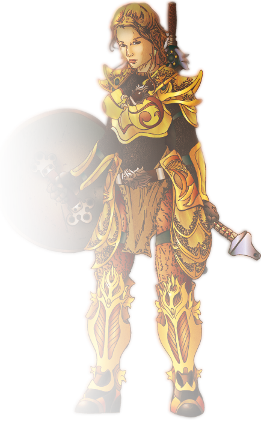

-

Dragon
A dragon is a legendary creature, typically scaled or fire-spewing and with serpentine, reptilian or avian traits, that features in the myths of many cultures around world.
The word dragon entered the English language in the early 13th century from Old French dragon, which in turn comes from Latin draconem (nominative draco) meaning "huge serpent, dragon", from the Greek word δράκων, drakon (genitive drakontos, δράκοντος) "serpent, giant seafish". The Greek and Latin term referred to any great serpent, not necessarily mythological, and this usage was also current in English up to the 18th century.
A dragon is a mythological representation of a reptile. In antiquity, dragons were mostly envisaged as serpents, but since the Middle Ages, it has become common to depict them with legs, resembling a lizard. Dragons are usually shown in modern times with a body like a huge lizard, or a snake with two pairs of lizard-type legs, and able to emit fire from their mouths. The European dragon has bat-like wings growing from its back. A dragon-like creature with wings but only a single pair of legs is known as a wyvern.